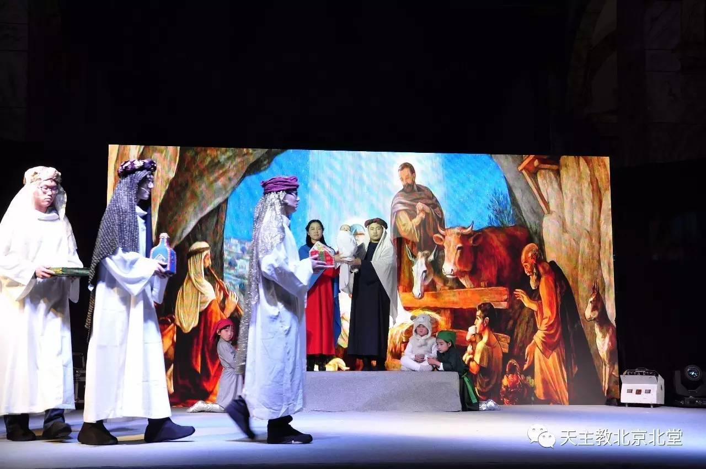

儿童圣诞音乐情景剧《一个婴儿的降生》，通过轻松幽默的形式，直观的呈现出《圣经》中的故事，让孩子们在表演中亲身体会那段故事。
今年的圣诞儿童剧，于元月二日在南堂由北堂、南堂及小武基祈祷所的孩子们共同参与演出。
音乐剧开始前，我们看到后台忙碌的老师和小演员们。
我们也荣幸的邀请到北京教区李山主教和北堂、南堂及小武基祈祷所的各位神父来观看我们音乐剧，与孩子们一起分享这个美好的夜晚。
演出开始前，李山主教为过去一年中，在圣经研读中取得突出成绩的同学们颁奖，并鼓励他们继续努力。
值此慈悲禧年刚刚过去之际，为了展现天主对人类和万物的爱，今年的演出在原有四幕的基础上，特别加演了序幕《约定》，讲述天主创造世界的美善以及人类违反与天主的约定从而走向了罪恶。
通过序幕中童声的背诵《创世纪》的篇章，让我们看到了天主创造天地万物的过程，让演员和观众们更进一步认识天主救恩的预许，也更加明白两千年以前圣子耶稣基督降生成人的缘由。
序幕之后，我们正式走近圣母玛利亚的生活。孩子们通过《领报》、《寻找》、《黑暗》和《光明》四幕剧情的表演，为我们讲述了耶稣降生的故事。
讲述人：杨燕老师
玛利亚与打水少女们
玛利亚探望表姐依撒伯尔
圣亚纳和圣若雅敬
暴君黑落德及士兵们
若瑟和玛利亚在白冷城与店主
三王来朝

烛光舞一一喜迎小耶稣的诞生，光明来到我们中间

一个小时的时光很快过去了，儿童圣诞音乐剧的表演即将结束，而现场的观众们却还意犹未尽。
由主教为本次演出做出特殊贡献的北堂、南堂、小武基堂主管儿童工作的神父们，及参与演出合唱的神哲学院修生合唱团代表颁奖。
神哲学院修生合唱团
全体主创和演员们与主教神父们合影
孩子们略显稚嫩的表演，在给我们讲述基督降生成人的奥迹之时，也为我们带来了轻松与笑声。
感谢所有为了这场演出辛苦付出的神父、老师、孩子们，及所有幕后的工作人员们和那些默默为圣诞剧的演出奉献的人们。
感谢各位为我们呈现出这样一场精彩的演出。